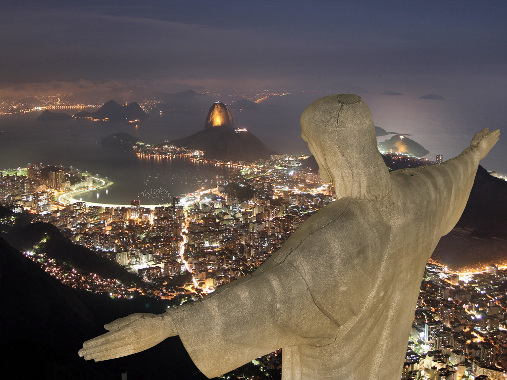

Notre prochain voyage nous entraine au Brésil, et plus particulièrement à Rio de Janeiro.
Rio de Janeiro, ses plages dorées, de Copacabana à Ipanema, sa culture du soleil, son culte du corps.
La bossa nova, le futebol : autant de mythes à découvrir en parallèle de celui du carnaval.
Surnommée la ville merveilleuse (la cidade maravilhosa), elle est construite
autour de la baie Guanabara,
se fondant avec la nature environnante. En son coeur vous pourrez visiter la plus grande forêt urbaine,
la floresta da Tijuca, et cerne de tous côtés le Corcovado,
qui lui, domine et protège la villeet sa baie.
Tout vous décrire serait l'objet d'un trop long article de blog mais nous avons choisis
cinq lieux de passage immanquable pour vous donner à vous aussi l'envie d'aller y passer vos prochaines
vacances:
Un des nombreux reliefs de la ville, il s'élève à 710 mètres d'altitude et accueille en
son sommet la statue du Christ Rédempteur(O Cristo Redentor).
Devenue l'emblème de la ville et parfois même du Brésil, et fut conçue et réalisée par une coopération
entre un ingénieur Brésilien, Heitor da Silva Costa et les scupteurs Paul Landowski et Gheorghe Leonida.
Haute de 38 mètres, son site offre une vue panoramique sur le centre-ville et permet de
voir le Pain de Sucre dont nous vous parlerons un peu plus loin.
Ce lieu magique aura aussi droit à être immortalisé par une chanson éponyme d'Antônio
Carlos Jobim.
De nombreuses répliques ont été réalisées de par le monde, sans égaler l'originale ni la splendeur du
site. En voici quelques-unes:
Christ des Ozarks aux États-Unis, Eureka Springs
Sanctuaire du Christ Roi au Portagal, Almada
Statue du Christ-Roi en Colombie, Cali
Statue du Christ-Roi en Pologne, Świebodzin

Le pain de Sucre (Pão de Açúcar)
Un peu plus bas (396 mètres), c'est en périphérique que vous pourrez vous rendre au Pain de Sucre
(Pão de Açúcar).
Bloc monolithique de granite, il est le seul à s'élever directement depuis le bord de mer, dans la baie
de Guanabara.
Il se situe sur une péninsule à l'entrée de la baie de Guanabara.
Le téléphérique sera finalisé en 1912. Si l'aventure vous en dit,
vous pouvez aussi escalader le Pain de Sucre, avec 270 voies possibles.
Une présentation en drone
Copacabana
Plage mythique, Copacabana, longue de près de 4,5 km, se trouve dans la zone sud de Rio
de Janeiro,
plus résidentielle. Même si elle a perdu quelque peu de son glamour au profit d'Ipanema,
Copacabana est l'une des promenades préférées des cariocas et le plus gros point de rassemblement de
soirées du réveillon.
Le quartier est peuplé par des familles de classe moyenne, mais les immeubles de l'Avenida Atlântica,
sur le front de mer, sont plus luxieuses.
A Copacabana on se rend bien compte que la plage tient une place importante dans la vie des Cariocas.
Copacabana c'est la plage pour tout le monde et toutes les classes sociales sont heureuses de s'y
retrouver pour vivre les mêmes joies
et les mêmes plaisirs et pour le plaisir du corps il y a aussi, ici ou là, sous les bouquets de
palmiers, des masseurs. Sur cette belle plage,
il n'y a pas vraiment d'espaces réservés pour des plages privées mais il y a des loueurs de transats et
de parasols.
Les gens les louent et vont s'installer là où ils veulent.
Sur l'autre côté de l'avenue on trouve les hôtels et de nombreuses terrasses de restaurants où
il est vraiment très agréable de s'arrêter.
Une vue du Paradis...
Le Carnaval de Rio
Le carnaval de Rio est la plus célèbre fête populaire au monde. Sous le soleil austral, cinq journées
d’allégresse
qui emportent toute la ville et culminent avec les défilés des douze grandes écoles de samba sur le
Sambodrome,
avenue bordée de gigantesques loges et gradins de béton, signée de l’architecte Niemeyer.
Un déluge de plumes et de paillettes, grand show haut en couleurs et âpre compétition, pour laquelle les
grandes écoles
de samba se sont préparées toute l’année. Elles sont jugées sur la chorégraphie, la scénographie,
la musique, les costumes, le rythme et le thème choisi. Une parade à guichets fermés,
filmée par les télévisions du monde entier.
La folie du carnaval se vit partout dans la ville, dans tous les quartiers, sur toutes les places.
Et n’en déplaise aux authorités, le carnaval demeure contestataire:
le peuple moque les politiques et conspue les corrompus.
L'irrévérence carnavalesque se vit là, avec les blocos, dans les rues de Rio.
Les "folioes" - participants du carnaval - se rassemblent en joyeuses troupes au rythme des
tambours - surdo, conga ou tambourin:
musiques paillardes, danses lancinantes. On se masque et se costume, on se pavane derrière une fanfare
ou autour du camion de la sono,
pour vivre la grande fête populaire, entre réjouissances et exutoire.
La Cathédrale Métropolitaine
Insolite, cette cathédrale à l'architecture spectaculaire cache un décor merveilleux.
Entre le quartier du Centro et le nord-est de Lapa, se dresse un monument
impressionnant.
Sous ses airs de temple maya, la cathédrale de Saint-Sébastien,
aujourd'hui siège de l'archevêque de Rio de Janeiro, est considérée comme
l'un des plus grands édifices catholiques au monde. Principale originalité:
ses lignes avant-gardistes dues à l'audace de l'architecte Edgar de Oliveira da
Fonseca qui,
face à l'urbanisation croissante de la ville, a imaginé, à la fin des années 60,
une pyramide de 96 mètres de hauteur capable d'accueillir près de 20 000
fidèles.
Bâtisse de béton, la cathédrale est dotée de quatre immenses baies de vitraux qui partent du sol
pour former une croix au sommet. Grâce à ces incroyables panneaux de verre,
l'intérieur baigne dans une variété étourdissante de teintes et de couleurs, et, la nuit,
le spectacle offert semble presque surnaturel. Après la visite, passez voir l'Escadaria Selarón,
215 marches recouvertes de mosaïques, ou partez en immersion dans l'agitation de Lapa.
Une vue intérieure de la Cathédrale
La Catedral Metropolitana de Rio de Janeiro fut bâtie de 1964 à 1979, en forme
de cône.
Officiellement, le Brésil est un pays catholique, qui prétend être la plus grande
communauté catholique du monde. Quoi qu'il en soit, le pays s'avère cependant remarquable
pour la variété et synchrétisme de ses nombreuses sectes et religions,
extrêmement souple quant à la pratique.
Trois ans après la conquête espagnole de la cité aztèque de Tenochtitlán,
Hernán Cortés entreprend, sur ces lieux, la construction d'une église.
Elle est convertie en cathédrale par Charles Quint et le pape Clément VII suivant
la bulle du 9 septembre 1530 et obtient le titre de « métropolitaine » en
1547,
sur décision de Paul III.
Cette cathédrale devient rapidement trop étroite et est démolie en 1571.
La construction de la nouvelle cathédrale est décidée par le vice-roi Martín Enríquez
de Almanza et
l'archevêque Pedro Moya de Contreras qui posent la première pierre la même
année.
Elle sera consacrée en 1667. Une chapelle latérale, le Sagrario, de style churrigueresque mexicain,
est construite entre 1749 et 1769. Les éléments finaux, deux clochers
et un dôme central,
œuvres de l'architecte néoclassique espagnol Manuel Tolsá, complètent le tout
en 1813.